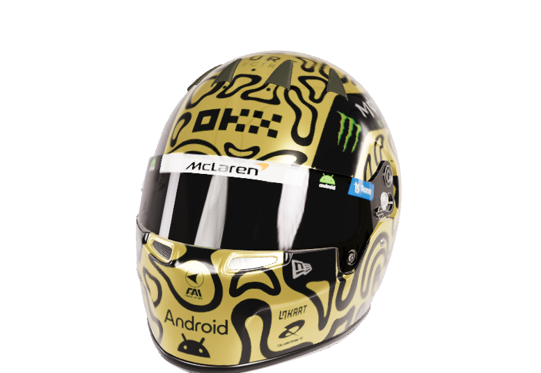

樾的个人空间 / 2026
In allWAYS.
动手探索，认真记录。
这里收藏想法、照片，和一直喜欢的事物。

YUÈ / 保持好奇向下探索 ↓
KEEP CURIOUS.
MAKE THINGS.
NOTICE MORE.
喜欢把生活里的小问题，变成值得动手试试的想法。
从一通电话、一张照片，到一份慢慢累积的收藏。
这里是我的个人空间，也是一份持续更新的记录。
01 / 项目探索
ON
MY MIND.
把想法，变成能用的东西。
02 / 上海摄影
IN
FRAME.
上海之行。
暮色、天际线，与街边的一次停留。
点击照片，查看完整画面。
03 / 兰多卡册
HALL OF
FAVORITES.
小小卡片，装下大大的喜欢。
卡册整理中滑动，翻看下一张 →
正在翻开卡册……
点击卡面放大，展开资料查看版别与记录。
下载七张实拍 ↓04 / 黑胶唱片
ON
REPEAT.
封面朝外，声音在里面。
唱片整理中点击封面，查看完整画面与版本。
05 / 留言板
SAY
HELLO.
路过的话，留句话。
填个昵称就能写，无需注册。
正在翻开留言本……
写下的话会公开展示，友善交流就好。